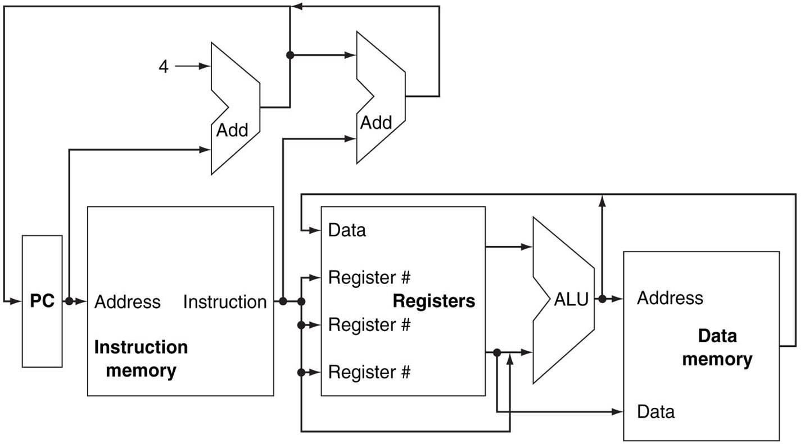

Systems design
Systems design is the process of defining the architecture, product design, modules, interfaces, and data for a system to satisfy specified requirements. Systems design could be seen as the application of systems theory to product development. There is some overlap with the disciplines of systems analysis, systems architecture and systems engineering.[1][2]
If the broader topic of product development "blends the perspective of marketing, design, and manufacturing into a single approach to product development,"[3] then design is the act of taking the marketing information and creating the design of the product to be manufactured. Systems design is therefore the process of defining and developing systems to satisfy specified requirements of the user.
The basic study of system design is the understanding of component parts and their subsequent interaction with one another.[4]
Until the 1990s, systems design had a crucial and respected role in the data processing industry. In the 1990s, standardization of hardware and software resulted in the ability to build modular systems. The increasing importance of software running on generic platforms has enhanced the discipline of software engineering.
Architectural design
The architectural design of a system emphasizes the design of the system architecture that describes the structure, behavior and more views of that system and analysis.
Logical design
The logical design of a system pertains to an abstract representation of the data flows, inputs and outputs of the system. This is often conducted via modelling, using an over-abstract (and sometimes graphical) model of the actual system. In the context of systems, designs are included. Logical design includes entity-relationship diagrams (ER diagrams).
Physical design
The physical design relates to the actual input and output processes of the system. This is explained in terms of how data is input into a system, how it is verified/authenticated, how it is processed, and how it is displayed. In physical design, the following requirements about the system are decided.
Input requirement,
Output requirements,
Storage requirements,
Processing requirements,
System control and backup or recovery.
Put another way, the physical portion of system design can generally be broken down into three sub-tasks:
User Interface Design
Data Design
Process Design
User Interface Design is concerned with how users add information to the system and with how the system presents information back to them. Data Design is concerned with how the data is represented and stored within the system. Finally, Process Design is concerned with how data moves through the system, and with how and where it is validated, secured and/or transformed as it flows into, through and out of the system. At the end of the system design phase, documentation describing the three sub-tasks is produced and made available for use in the next phase.
Physical design, in this context, does not refer to the tangible physical design of an information system. To use an analogy, a personal computer's physical design involves input via a keyboard, processing within the CPU, and output via a monitor, printer, etc. It would not concern the actual layout of the tangible hardware, which for a PC would be a monitor, CPU, motherboard, hard drive, modems, video/graphics cards, USB slots, etc. It involves a detailed design of a user and a product database structure processor and a control processor. The H/S personal specification is developed for the proposed system.